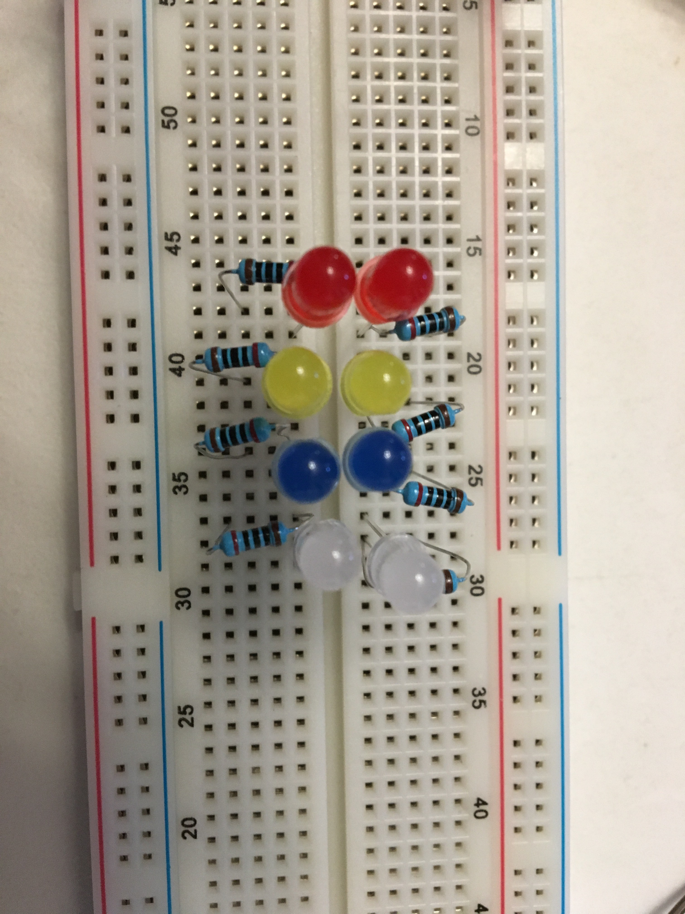
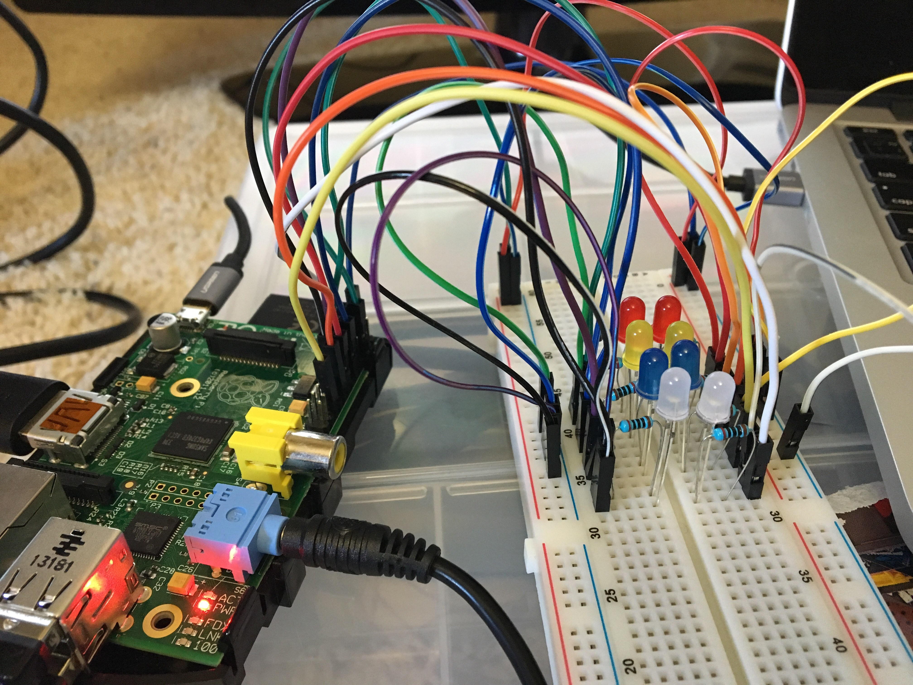

[7.24.17]
Lightshow Pi ~ Early Tech Behind the Laminar Fountain
Today was awesome. I made huge progress in the tech side of the laminar fountain project.
I found a software called LightShow Pi, which was originally created for Christmas light shows, but many people have used it for smaller projects of their own.
The first step after getting an LED to flash
with the Pi was to install the software. First I had to update all
the packages 'n stuff on my system with sudo apt-get update
and sudo apt-get upgrade. That took around
thirty-minutes to fully install.
Next I cloned the LightShow Pi repository off of GitHub: cd
~
git clone https://togiles@bitbucket.org/togiles/lightshowpi.git
And change to the stable branch of code: cd
lightshowpi
git fetch && git checkout stable
Once completed, you install the stuff! Just
make sure you're in the "lightshowpi" directory. Then you can run: sudo
./install.sh.
This part tripped me up, because it took over
two hours. Everything installed fine until it started running the
line Installing rpi-audio-levels.... My Pi got really
hot and stuck, so I rebooted and tried to reinstall, but it kept
getting stuck.
I left it for about 2hrs (with many checks in between) before seeing that it had finished. Then I rebooted as the instructions said.
After that, the next step would be to build the actual LED setup on my breadboard. Initially I tried following this link, but only for a generic idea of how to wire the breadboard. I didn't have a breakout board, so I went back to basics and made a simple circuit like the one in my last post, but with eight LEDs instead of just one.
Next I attached the pins of the Raspberry Pi (3.3V and Ground) to the breadboard:


Lovely mess, ain't it? The pins are attached to their respective LED, and each LED is also connected to ground.
Finally, I could plug it all in and test this
thang! To test it and make sure you have all the right channels, you
run sudo python py/hardware_controller.py --state=flash
Each LED blinked twice, and I knew I had the right setup.
To play music, there were a few more steps I had to take. First, to make sure I had audio output, I connected my audio jack to a portable speaker I had (that's the blue thing). Next I had to actually find the music. Using a Lexar USB, I pulled some mp3 files from my music collection and put them on the USB, which I connected to the Pi. Then using the command:
sudo python py/synchronized_lights.py
--file=/home/pi/Desktop/Music/singles/shelter.mp3
With --file=, you continue the
command with the file path of where your music is located.
After all that work, I got this wonderful result. https://youtu.be/oHTUvcA52Bo
Next step, to try it with RGB LEDs.
Until next time!
Recent Posts:
* Setting Up A Web
Server on FreeBSD 12.0-CURRENT | here
* i3wm Setting Up
Backlight + Sound keybindings | here
* Difference Between a
Dictionary, an Array, a Record, and a Map | here
* Programming Paradigms
| What Are They and How Do They Work? | here